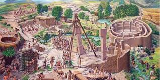

Göbeklitepe veya Göbekli Tepe, Şanlıurfa il merkezinin yaklaşık olarak 22 km kuzeydoğusunda, Örencik köyü yakınlarında yer alan dünyanın bilinen en eski kült yapılar topluluğudur. Bu yapıların ortak özelliği, T biçimindeki 10-12 dikilitaşın yuvarlak planda dizilmiş, aralarının ise taş duvarla örülmüş olmasıdır. Bu yapının merkezinde daha yüksek boyda iki dikilitaş karşılıklı olarak yerleştirilmiştir. Bu dikilitaşların çoğu üzerinde insan, el ve kol, çeşitli hayvan ve soyut semboller, kabartılarak veya oyularak betimlenmiştir. Söz konusu motifler yer yer bir süsleme olamayacak kadar yoğun olarak kullanılmıştır. Bu kompozisyonun bir öykü, bir anlatım veya bir mesaj ifade ettiği düşünülmektedir. Hayvan motiflerinde boğa, yaban domuzu, tilki, yılan, yaban ördeği ve akbaba en sık görülen motiflerdir. Bir yerleşim yeri değil, kült merkezi olarak tanımlanmaktadır. Buradaki kült yapıların tarım ve hayvancılığa yakın olan son avcı grupları tarafından inşa edilmiş olduğu anlaşılmaktadır. Diğer anlatımla Göbekli Tepe, çevredeki oldukça gelişmiş ve derinlik kazanmış bir inanç sistemine sahip olan avcı-toplayıcı gruplar açısından önemli bir kült merkezidir. Bu durumda bölgenin en erken kullanımının Çanak Çömleksiz Neolitik Çağ’ın (PPN, Pre-Pottery Neolithic) A evresine (MÖ 9.600-7.300), yani günümüzden en azından 11.600 yıl öncesine dayandığı ileri sürülmektedir.[3] Bununla birlikte Göbekli Tepe'deki en eski faaliyetleri tarihlendirme olanağı şimdilik yok, fakat bu anıtsal yapılara bakıldığında Paleolitik Çağ'a kadar uzanan, birkaç binyıl daha eskiye, epipaleolitike kadar giden bir geçmişi olduğu düşünülmektedir. Göbekli Tepe'nin bir kült merkezi olarak kullanımının MÖ 8 bin dolaylarına kadar devam ettiği ve bu tarihlerden sonra terk edildiği, başka veya benzer amaçlarla kullanılmadığı anlaşılmaktadır.
Bütün bunlar ve kazılarda ortaya çıkarılan anıtsal mimari, Göbekli Tepe'yi eşsiz ve özel yapmaktadır. Bu bağlamda UNESCO tarafından 2011'de Dünya Mirası geçici listesine alındı ve 2018'de kalıcı listeye girdi.
Söz konusu dikilitaşlar, stilize insan heykelleri olarak yorumlanmaktadır. Özellikle D yapısı merkez dikilitaşlarının gövdesinde bulunan insan el ve kol motifleri, bu konudaki her türlü şüpheyi ortadan kaldırmaktadır. Dolayısıyla "dikilitaş" kavramı, işlev belirtmeyen yardımcı bir kavram olarak kullanılmaktadır. Esasen bu "dikilitaş"lar, insan vücudunu üç boyutlu olarak betimleyen stilize tarzda yontulardır.

Göbekli Tepe'deki kazılara kadar bilim dünyası, göçebe küçük gruplar halinde örgütlendiği düşünülen avcı-toplayıcı toplulukları oldukça basit standartlarda yorumlamıştır. Ancak kazılarda ortaya çıkan, bir kült merkezi olarak anıtsal boyutlarda mimari, büyük taş yontular, sembolik motifler ve stilize edilmiş canlandırmalar, en azından bu bölgedeki toplulukların oldukça gelişkin ve çok yönlü bir sosyal yapıya sahip olmaları gerektiğini göstermektedir. Göbekli Tepe'de ortaya çıkarılan bütün bu buluntular böylesi faaliyetleri gerçekleştirebilmek için kalabalık grupları bir araya getirmekteki organizasyon gelişkinliğinin, kişisel sanat becerilerin ve ritüel itkilerin, bir çeşit sanat anlayışının ve arayışının varlığını ortaya koymaktadır. Bu bulgular ışığında bilim dünyası, avcı-toplayıcı toplulukların sosyokültürel yapısı hakkındaki hakim görüşleri gözden geçirmek durumundadır. Elde edilen sonuçları, sembolizm üzerine genel kabul gören görüşlerin de değişmesine sebep olmuştur. Arkeolojinin bu konudaki geleneksel görüşü, ancak tarım devriminin (bkz. Neolitik Devrim) topluluklara bol ve güvenli besin kaynağı ve zaman sağladığını, bu sayede anıtsal bir mimari ve zengin bir sembolik anlatım geliştirebildikleri yönündeydi. Ne var ki Göbekli Tepe'yi yapanların tarımcı topluluklar olmadığı anlaşılmaktadır. Bilim dünyası avcı-toplayıcı grupların küçük birimler olduğunu, her gün besin sağlamak için uğraşmak zorunda kaldıklarını ve sadece o günü kurtarabildiklerini kabul etmekteydi. Bu gibi kült yapılarını inşa etmek ve bu merkezleri amaçları yönünde kullanmak, muhakkak kalabalık bir grup insanı avcılıktan ve toplayıcılıktan bir süre için de olsa çekmeyi gerektirmektedir. Kazı başkanı Klaus Schmidt ve ekibi, tonlarca ağırlıktaki dikilitaşları kayalardan kesip çıkarmak, işlemek, yarım kilometreye yakın bir mesafeyi kat ederek Göbekli Tepe'ye getirmek ve yapıları inşa etmek için en az 500 kişinin çalışmış olması gerektiğini düşünüyorlar. Her şeyden önce bu insanların beslenmesi gerekmektedir. Bu durum göz önünde bulundurularak bu insanların ihtiyacı olan besin maddelerini sağlama gereğinin, tarımı keşfetme yönünde bu toplulukları zorladığı ileri sürülmektedir. Gerçekten de III. Tabaka yapılarının daha sonra örtülmesinde kullanılan dolgu yığını içinde büyük sayılara ulaşan miktarda hayvan kemikleri bulunmaktadır. Bulunan hayvan kemiği parçalarının sayısı 100 bini geçmektedir. Bu durum Göbekli Tepe'de çok fazla et tüketildiğini göstermektedir. Bu et tüketimi, çalışanların ihtiyacını karşılamanın yanı sıra, burada düzenlenen ritüellerde yapılan şölenlerde, çevreden gelen insanların ihtiyacını karşılamış olabilir, hatta kurban törenlerinde kullanıldığı da düşünülebilir. Bu durum şüphesiz insanları daha geniş besin kaynakları aramaya itmiştir. Bütün bunlar arkeolog Ian Hodder'in, sosyokültürel değişmelerin tarımdan önce gerçekleştiği tezinde ifade bulmaktadır. Bu bağlamda, Göbekli Tepe buluntularının ışığında Neolitik Devrim'in çekirdek bölgesinin Levant olmaktan çok Toroslar'ın güney etekleri olabileceği sorgulanır olmuştur. Arkeologlarca üzerinde durulan diğer bir konu da bu yapıların inşa edilmesinin gerektirdiği son derece karmaşık organizasyonun avcı-toplayıcı topluluklarca nasıl sağlanabildiği konusudur. Alman Arkeoloji Enstitüsü'nden Harald Hauptmann, bu organizasyona "dini" liderlerin önderlik ettiğini ileri sürmektedir. Bu durumda "seçkin" bir tabakalaşmanın bu toplumlarda ortaya çıkmış olduğunu kabul etmek gerekmektedir. Klaus Schmidt de Göbekli Tepe'yi inşa eden toplulukların tabakalı bir toplum olduğunu ifade etmektedir. Halbuki bilim dünyasında Göbekli Tepe'ye kadar hakim olan bakış açısı, karmaşık dini uygulamaların ve organizasyonun ancak tarımın hakim geçim tarzı olduğu topluluklarda ortaya çıktığı yönündeydi. Ancak Göbekli Tepe bu yaklaşımı sorgulanmak zorunda bırakmaktadır. Gerçekten de bu denli anıtsal yapıları ortaya çıkaracak işgücünü, çevredeki avcı-toplayıcı gruplardan alarak çalıştırmak, ancak köklü bir inanç geçmişine dayanacaktır. Diğer taraftan özellikle hayvan kabartmalarında ister istemez dikkat çeken bir ustalık vardır. Farklı bir ifadeyle sanat denebilecek bir üsluplaşma görülmektedir. "Uzman bir sanatçının elinden çıkmış, o üslubu bilen birilerinin yaptığı" eserler olarak görülmektedir. Dolayısıyla bu sanat üslubunun uzun bir geçmişinin olması gerektiği ortadadır. Diğer taraftan Göbekli Tepe'de bulunan bu sembollerin benzerleri, fakat daha küçük ölçekli olarak, Kuzey Irak ve Suriye'ye kadar yayılan bir bölgede yürütülen arkeolojik kazılarda ortaya çıkarılmıştır. Bu verilere dayanılarak Göbekli Tepe'nin Neolitik Dönem'de kültürel etkileşim açısından bir merkez olduğu ileri sürülmektedir.